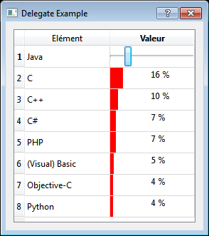

Ce chapitre constitue, pour le lecteur, une mise en bouche à l'architecture MVC mise en place par Qt ainsi que ses différents composants. Celui-ci traite principalement de l'aspect Modèle en présentant quelques modèles déjà existant comme QStringListModel ou encore QStandardItemModel, ainsi que de l'aspect View en présentant les trois grands types de vue disponibles avec Qt, à savoir QListView, QTableView ainsi que QTreeView.
Dans ce contexte, une apostille constitue un rajout. Dans ce tutoriel, je me propose d'introduire un composant non évoqué dans le tutoriel officiel : les Delegate
Au terme de ce mini-tutoriel, nous apprendrons ce que sont les Delegate, à quelle problématique ils répondent, et comment s'en servir, au travers d'un exemple simple.
L'architecture Modèle Vue Contrôleur (Model View Controler) est un modèle de conception (design pattern) bien connu et beaucoup utilisé lors de la création d'interfaces graphiques. Originaire du langage Smalltalk, ce modèle permet de diviser une interface utilisateur en trois entités :
Le modèle contient les données. Il s'occupe du traitement et de l’interaction des données avec, par exemple, une base de données ;
La vue est la représentation graphique. Elle correspond à la partie affichage des données, de ce que l'utilisateur peut voir ;
Enfin, le contrôleur prend en charge l'interaction avec l'utilisateur, recevant tous les événements déclenchés par l'utilisateur (clic, sélection, ...) et mettant par la suite à jour les données.
Cette achitecture permet donc de séparer les différentes entités d'une application, aboutissant à une architecture flexible, claire, et maintenable.
Mise en oeuvre avec Qt
Dans sa version 4, Qt a introduit un ensemble de nouvelles vues mettant en oeuvre une architecture de type modèle/vue
Les modèles
Tous les modèles fournis par Qt sont basés sur la classe QAbstractItemModel. Cette classe est la plus abstraite, et la plus haute dans la hiérarchie des classes des différents modèles. Cette classe fournit une interface que tous les modèles doivent respecter, afin de pouvoir être utilisé correctement avec une vue.
De base, Qt fournit un ensemble de modèles pouvant être directement utilisés comme :
QStringListModel : modèle utilisé pour stocker une liste de QString ;
QFileSystemModel : modèle fournissant un ensemble d'informations sur un fichier ou un répertoire du système de fichier local (anciennement QDirModel) ;
QStandardItemModel : ce modèle permet de gérer tout de type de structure, complexe ou non ;
Cependant, il arrive parfois (voire souvent), que ces modèles ne conviennent pas à notre utilisation, et que l'on souhaite créer nos propres modèles. Pour cela, rien de réellement complexe. Il suffit en effet de créer une classe dérivant d'une des classes suivantes :
QAbstractItemModel : comme évoqué plus haut, il s'agit de la classe la plus abstraite ;
QAbstractListModel : classe abstraite fournissant une interface pour un modèle de type liste (associé à une QListView) ;
QAbstractTableModel : classe abstraite fournissant une interface pour un modèle de type tableau (associé à une QTableView) ;
A noter qu'il n'existe pas de classe séparée pour un modèle de type hiérarchique (QTreeView). Il s'agit simplement de QAbstractItemModel.
Vous remarquerez que toutes ces classes utilise la même racine, à savoir QAbstractXModel.
Une fois que l'on a choisi la classe de base convenant le mieux à notre utilisation, il ne reste plus qu'à redéfinir certaines méthodes virtuelles comme :
int QAbstractItemModel::rowCount(const QModelIndex & parent = QModelIndex()) const : fonction retournant le nombre de lignes du modèle ;
QVariant QAbstractItemModel::data (const QModelIndex & index, int role = Qt::DisplayRole ) const : fonction renvoyant la donnée associée au rôle role pour l'index index
Pour des modèles modifiables, il est aussi nécessaire de redéfinir la fonction bool QAbstractItemModel::setData (const QModelIndex & index, const QVariant & value, int role = Qt::EditRole )
La création de modèles personnalisés n'est cependant pas l'objet de ce tutoriel. Bien que nous l'aborderons brièvement au travers d'un exemple, je vous renvoie à la documentation traitant le sujet en profondeur.
Les vues
Une fois que l'on dispose d'un modèle (déjà existant ou personnalisé), on dispose de trois types de vue :
Comme vous l'aurez sans doute remarqué, nous n'avons jusqu'à présent pas évoqué le dernier aspect à savoir le Contrôleur. Voici la vérité : Qt n'utilise pas tout à fait une architecture MVC. Ce n'est plus un C mais désormais un D. Pour ceux qui n'auraient pas fait le rapprochement, il s'agit d'un D pour ... Delegate. Eh oui, maintenant, vous savez tout : Qt utilise en réalité une architecture model/view entourée d'un delegate.
Présentation du concept
Mais à quoi Diantre ce fameux Delegate sert-il ?
Au contraire d'une architecture MVC classique, l'architecture model/view instaurée par Qt ne fournit pas de réel composant permettant de gérer les interactions avec l'utilisateur. De ce fait, ceci est géré par la vue elle-même.
Cependant, pour des raisons de flexibilité, l'interaction et les entrées utilisateurs ne sont non pas prises en compte par un composant totalement séparé, à savoir le contrôleur, mais par un composant interne à la vue : le Delegate. Ce composant est responsable de deux choses :
Personnaliser l'édition des éléments au moyen d'un editor ;
Personnaliser le rendu des éléments à l'intérieur d'une vue.
Ainsi, grace à un delegate, il vous est possible de personnaliser la manière dont les entrées utilisateurs seront gérées, ainsi que le rendu des éléments. Pour exemple, lorsque vous utilisez une QTableView avec un modèle éditable, lorsque vous cliquez sur une cellule de votre table, il vous est possible de modifier la valeur de la cellule, grace à une LineEdit. Cela est possible grace au Delegate qui a fourni à la vue un moyen d'éditer les données au travers d'un composant de type QLineEdit.
Utiliser un Delegate existant
Vous aurez sans douté remarqué, que, par défaut, même si vous n'avez paramétré aucun delegate, votre vue se charge toute seule de fournir un moyen d'éditer vos données. Cela est du au fait que les vues sont déjà dotées d'un delegate par défaut : QStyledItemDelegate. En effet, de base, Qt fournit deux delegate par défaut :
La seule différence résidant entre ces deux Delegate est que QStyledItemDelegate utilise le style courant pour le rendu des données. Ces deux Delegate héritent cependant de la même classe, à savoir QAbstractItemDelegate, fournissant une interface de base générique à tous les delegate. Qt fournit en outre QSqlRelationalDelegate, permettant d'éditer et afficher des données d'un QSqlRelationalTableModel.
Cependant, même si les vues sont dotés d'un delegate par défaut, il est bien entendu possible de modifier et paramétrer celui-ci grâce à la fonction void QAbstractItemView::setItemDelegate ( QAbstractItemDelegate * delegate ). Il est aussi possible de récupérer le delegate courant grâce à la fonction QAbstractItemDelegate * QAbstractItemView::itemDelegate () const
Jetons un coup d'oeil à la mécanique interne
Nous avons dit que le delegate était en partie chargé de fournir à l'utilisateur un moyen d'éditer les données au sein d'une vue, en fournissant un editor. Cet editor est tout simplement un composant de type QWidget. Même si précédemment nous avons évoqué l'exemple d'une QLineEdit, le delegate par défaut ne crée pas que des QLineEdit. En effet, celui-ci crée le composant adapté au type de données de la cellule. Par exemple, si la cellule contient un int, le delegate par défaut créera un composant de type QSpinBox. Pour un composant de type double, il s'agira d'un QDoubleSpinBox.
Regardons le code de %QTDIR%/src/gui/itemviews/qstyleditemdelegate.cpp, et notamment la méthode createEditor :
QVariant::Type t = static_cast<QVariant::Type>(index.data(Qt::EditRole).userType());
return d->editorFactory()->createEditor(t, parent);
Que font ces deux lignes ? Tout d'abord, le type de la donnée contenue dans la cellule est stoqué dans la variable t. Souvenez-vous, la fonction data() de QAbstractItemModel renvoyant une variable de type QVariant, celle-ci est capable de gérer de nombreux types de données. La fonction userType() renvoie ce type sous forme d'un int (ce qui justifie l'emploi de static_cast). Si la variable est de type QString, t serait donc égal à QVariant::String, QVariant::Date pour une variable de type QDate, ... La liste complète étant disponible ici
La deuxième ligne fait appel à la méthode createEditor de editorFactory(). La méthode editorFactory() étant définie comme :
On y comprend donc que cette méthode retourne la factory par défaut si aucune n'a été définie. Mais qu'est-ce donc que cette fameuse factory ? QItemEditorFactory est une classe dite de fabrique (factory), permettant entre autre de créer l'editor correspondant au type de données que l'on a évoqué plus haut.
Par défaut, voici les composants crées en fonction du type :
Type
Widget
bool
QComboBox
int / unsigned int
QSpinBox
double
QDoubleSpinBox
QDate
QDateEdit
QDateTime
QDateTimeEdit
QPixmap
QLabel
QString
QLineEdit
QTime
QTimeEdit
Le delegate par défaut est donc capable de gérer une grande partie des types de données. Cependant, il se peut que nous ayons besoin d'un comportement autre que celui par défaut. Pour cela, il suffit de créer notre propre delegate, c'est ce que nous allons voir dans le chapitre suivant.
Cette fonction retourne le widget (editor) pour éditer l'item se trouvant à l'index index. Le paramètre option permet de contrôler comment le widget apparait.
Cette fonction sera par exemple appelée lorsque l'utilisateur effectuera un double-clic sur la cellule d'une QTableView. L'editor retourné par la fonction sera alors présenté à l'utilisateur
Cette fonction permet de transmettre à l'editor editor les données à afficher à partir du modèle, se trouvant à l'index index
Une fois l'editor crée et ouvert, cette fonction sera ensuite appelée afin de remplir l'editor avec la donnée concernée, à partir du modèle. La donnée sera alors extraite du modèle puis affichée au travers de l'editor editor
Cette fonction est en quelque-sorte l'inverse de la précédente. Le rôle de celle-ci est de récupérer les données de l'editor editor et de les stocker à l'intérieur du modèle model, à l'index identifié par le paramètre index.
Comme son nom l'indique, cette fonction permet d'effectuer le rendu d'un certain élément en utilisant le painter painter. Les éléments sont rendus en utilisant le style courant de la vue.
Maintenant que nous savons comment créer notre propre Delegate, nous allons mettre ce que nous venons d'apprendre en oeuvre au travers d'un exemple. Pour éviter de nous épancher dans un long discours, voici une capture d'écran de l'application que nous allons réaliser :

Il s'agit donc d'un tableau (QTableView) comportant deux colonnes, présentant à gauche un élément et à droite une valeur associée en pourcentage. Lorsque nous ne sommes pas en mode édition, nous dessinerons une barre, représentant le pourcentage. Lorsque nous serons en édition, nous utiliserons un QSlider afin de faire varier le pourcentage comme bon nous semble.
Commençons donc par la première étape.
Le modèle
La première étape va être de créer notre propre modèle. Nous n'utiliserons pas ici de QStandardItemModel. La première chose à faire est de réfléchir à quelle classe de base nous allons hériter. Notre modèle devant être présenté en tant que tableau, il devient alors évident que nous allons hériter de la classe QAbstractTableModel.
Allons-y :
La classe
class TableModel : public QAbstractTableModel
{
Q_OBJECT
public:
enum Columns { Element = 0, Value, Count = Value + 1 };
explicit TableModel(QObject *parent = 0);
Qt::ItemFlags flags(const QModelIndex &index) const;
int rowCount(const QModelIndex &parent = QModelIndex()) const;
int columnCount(const QModelIndex &parent = QModelIndex()) const;
QVariant data(const QModelIndex &index, int role = Qt::DisplayRole) const;
QVariant headerData(int section, Qt::Orientation orientation, int role = Qt::DisplayRole) const;
bool setData(const QModelIndex &index, const QVariant &value, int role = Qt::DisplayRole);
void addElement(const QString &element, int value);
private:
QList<QPair<QString, int> > mElements;
};
Pour des raisons de lisibilité et flexibilité, nous définissons une énumération Columns nous permettant de lister les différentes colonnes. Le Count est une petite astuce pour obtenir le nombre d'éléments et nous servira pour la méthode columnCount().
La méthode Qt::ItemFlags flags(const QModelIndex &index) const; nous sera utile pour décider de quelles parties de notre modèle seront éditables ou non (la colonne des éléments sera en lecture seule).
Nos éléments seront stockés à l'intérieur d'une liste de QPair. Pour rappel, une paire est un ensemble composé de deux éléments. Le premier élément sera le texte QString et le deuxième la valeur associée (int). La méthode void addElement(const QString &element, int value); nous permettra d'ajouter un élément à l'intérieur de notre modèle.
A l'intérieur de la fonction, nous vérifions la colonne visée grace à la méthode column() de index. Si la colonne est la colonne des éléments (Element), nous retournons les flags Qt::ItemIsEnabled | Qt::ItemIsEnabled. Ceci signifie que notre élément sera activé et sélectionnable mais pas éditable. Si la colonne est la colonne des valeurs (Value), nous y rajoutons le flag Qt::ItemIsEditable, permettant à l'utilisateur d'éditer l'élément.
Si nous ne sommes dans aucune de ces configurations (ce qui ne devrait pas être le cas ici), nous laissons la responsabilité à la classe de base de retourner les flags nécessaires.
Si l'index parent est valide (notre modèle n'est pas un modèle hiérarchique), nous renvoyons 0, sinon Count (énumération que nous avons précédemment définie).
Comme précédemment, nous renvoyons 0 si parent est valide. Sinon, le nombre de lignes de notre modèle correspond au nombre d'éléments de mElements : mElements.count()
data() headerData() setData()
QVariant TableModel::data(const QModelIndex &index, int role) const
{
if (!index.isValid() || index.row() < 0 || index.row() >= mElements.count())
{
return QVariant();
}
switch (role)
{
case Qt::DisplayRole:
case Qt::EditRole:
if (index.column() == Element)
{
return mElements[index.row()].first;
}
else if (index.column() == Value)
{
return mElements[index.row()].second;
}
break;
}
return QVariant();
}
Nous commençons par vérifier la validité de l'index. Si tel n'est pas le cas, nous renvoyons une donnée invalide : QVariant()
Nous renvoyons ensuite, selon le rôle role la donnée correspondante. Dans notre modèle, nous prenons en compte les rôle Qt::DisplayRole et Qt::EditRole (consulter la documentation pour la description de ces rôles). S'il s'agit d'un de ces deux rôles, nous renvoyons le premier élément de notre paire correspondant à l'index index si la colonne est Element, ou bien le second pour la colonne Value.
Pour tous les rôles restants, nous retournons une donnée invalide.
QVariant TableModel::headerData(int section, Qt::Orientation orientation, int role) const
{
if (orientation == Qt::Horizontal && role == Qt::DisplayRole)
{
switch (section)
{
case Element:
return trUtf8("Elément");
break;
case Value:
return trUtf8("Valeur");
break;
}
}
return QAbstractTableModel::headerData(section, orientation, role);
}
Ce code ne devrait pas avoir besoin de descriptions supplémentaires. Si nous somme dans l'orientation Horizontal (header horizontal), avec le rôle DisplayRole, nous renvoyons le texte correspondant à la section (colonne).
bool TableModel::setData(const QModelIndex &index, const QVariant &value, int role)
{
if (!index.isValid() || index.row() < 0 || index.row() >= mElements.count())
{
return false;
}
switch (role)
{
case Qt::DisplayRole:
case Qt::EditRole:
if (index.column() == Element)
{
mElements[index.row()].first = value.toString();
}
else if (index.column() == Value)
{
mElements[index.row()].second = value.toInt();
}
emit dataChanged(index, index);
return true;
break;
}
return false;
}
Voir la fonction data(). Il est par ailleurs important de prendre soin d'émettre le signal void QAbstractItemModel::dataChanged ( const QModelIndex & topLeft, const QModelIndex & bottomRight ) afin de notifier à la vue que les données ont changé.
addElement()
void TableModel::addElement(const QString &element, int value)
{
const int count = mElements.count();
if (value < 0)
{
value = 0;
}
else if (value > 100)
{
value = 100;
}
beginInsertRows(QModelIndex(), count, count);
mElements << qMakePair(element, value);
endInsertRows();
}
Nous commençons par récupérer le nombre d'éléments courant puis nous nous assurons que value est comprise entre 0 et 100. La fonction void QAbstractItemModel::beginInsertRows ( const QModelIndex & parent, int first, int last ) permet de commencer une opération d'insertion de ligne à l'intérieur d'un modèle (il est nécessaire de l'appeler). Après avoir ajouté notre élément à l'intérieur de notre liste en utilisant la fonction utilitaire QPair<T1, T2> qMakePair ( const T1 & value1, const T2 & value2 ), nous terminons notre opération d'insertion grace à la fonction endInsertRows()
Exercice
En vous aidant de la documentation, modifiez le modèle afin que les éléments de la première colonne soit alignés de manière centrée
Indice 1
La fonction à modifier est la fonction data()
Indice 2
Le rôle à gérer est le rôle Qt::TextAligmentRole
Solution
case Qt::TextAlignmentRole:
if (index.column() == Element)
{
return Qt::AlignCenter;
}
break;
Notre modèle étant désormais terminé et prêt à l'emploi, nous allons nous atteler au delegate qui nous permettra d'éditer les valeurs grace à un Slider et dessiner une "barre" en mode non-édition.
Aucune surprise ici. Nous créons notre propre classe TableDelegate héritant de QStyledItemDelegate et nous redéfinissons les méthodes nécessaires (voir précédemment).
Comme nous y sommes habitués, nous agissons en fonction de la colonne column(). Dans le cas de la colonne Value, nous créons un QSlider horizontal. Nous lui affectons un intervalle de valeurs de 0 à 100 et nous plaçons la propriété autoFillBackground à true afin d'obtenir un fond opaque. Sinon, nous laissons la responsabilité à la classe parente de créer l'editor.
setEditorData() setModelData()
void TableDelegate::setEditorData(QWidget *editor, const QModelIndex &index) const
{
if (index.column() == TableModel::Value)
{
QSlider *slider = qobject_cast<QSlider *>(editor);
if (slider)
{
const int value = index.model()->data(index).toInt();
slider->setValue(value);
}
}
else
{
QStyledItemDelegate::setEditorData(editor, index);
}
}
Afin d'initialiser correctement notre Slider, nous récupérons la valeur correspondante dans notre modèle à l'index index (que nous n'oublions pas de convertir en int, la fonction data renvoyant un QVariant) puis nous l'affectons à notre slider en appelant la fonction setValue. Le paramètre editor étant un paramètre de type QWidget, nous n'oublions pas de le convertir en QSlider à l'aide de la fonction qobject_cast.
Nous réalisons ici l'opération inverse. Lors de la fin de l'édition, nous récupérons la valeur de notre Slider puis nous l'affectons à notre modèle à l'index index. Ceci permet donc de mettre à jour le modèle une fois l'édition terminée et l'editor fermé.
Comme convenu, nous mettons à jour la géométrie (position et taille) de notre editor via les informations du paramètre option. La macro Q_UNUSED permet de marquer le paramètre index comme non-utilisé afin de ne pas obtenir de warning lors de la compilation (unused parameter).
paint()
void TableDelegate::paint(QPainter *painter, const QStyleOptionViewItem &option, const QModelIndex &index) const
{
if (index.column() == TableModel::Value)
{
painter->save();
const int value = index.model()->data(index).toInt();
QRect rect(option.rect);
const int width = (value * rect.width()) / 100;
rect.setWidth(width);
QColor c;
if (value <= 20)
{
c = Qt::red;
}
else if (value <= 50)
{
c = QColor(240, 96, 0);
}
else
{
c = Qt::green;
}
painter->fillRect(rect, c);
QTextOption o;
o.setAlignment(Qt::AlignCenter);
painter->drawText(option.rect, QString("%1 %").arg(value), o);
painter->restore();
}
else
{
QStyledItemDelegate::paint(painter, option, index);
}
}
Voici pour finir la partie rendu. Souhaitant uniquement agir sur la colonne des valeurs, nous commençons par vérifier si nous sommes dans ce cas de configuration. Dans le cas contraire, nous laissons la responsabilité à la classe parent d'effectuer le rendu.
Nous commençons par enregistrer (sauvegarder) l'état courant du painter. Nous récupérons la valeur située à l'index correspondant que nous utilisons afin de calculer la largeur effective de notre barre grâce à un simple produit en croix. Nous obtenons donc notre rectangle QRect. Nous en profitons aussi par la même occasion pour affecter une couleur différente selon la valeur correspondante :
Rouge si valeur <= 20 ;
orange si valeur <= 50 ;
vert sinon.
Disponsant de notre rectangle et sa couleur, nous utilisons la fonction fillRect pour dessiner et remplir le rectangle de la couleur correspondante. Pour finir, nous dessinons le texte correspondant à la valeur suivie du pourcentage, de manière centrée, avant de restorer l'état du painter que nous avons préalablement sauvegardé.
Ceci conclut donc notre programme. Il est laissé au soin du lecteur de le compléter en créant la vue, le modèle puis le delegate avant de remplir le modèle des valeurs souhaitées, afin d'avoir un programme complet et opérationnel.
Nous voici arrivés au terme de ce tutoriel. Celui-ci vous aura appris :
Ce que sont sont les delegate : composants permettant de personnaliser l'édition et le rendu des éléments à l'intérieur d'une vue ;
Comment créer son propre delegate ;
D'autre part, nous venons de voir, au travers d'un exemple simple, comment créer de toute pièce notre propre modèle.
Pour un autre exemple d'utilisation, un peu plus concret, la documentation fournit par ailleurs un Star Delegate Example.